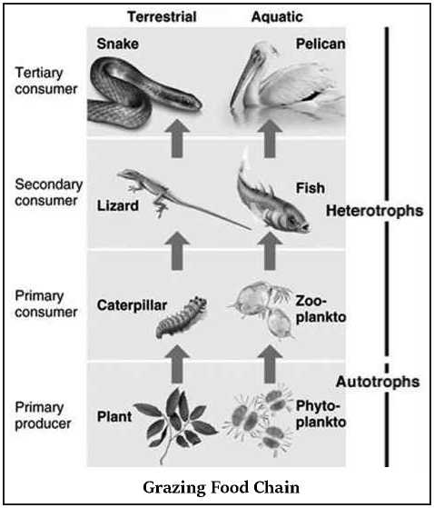
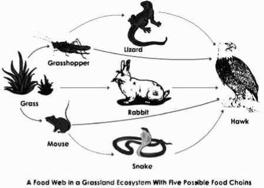
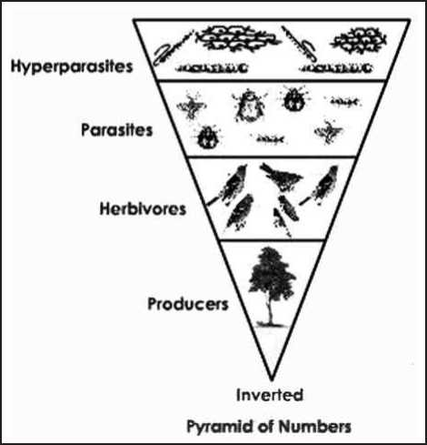
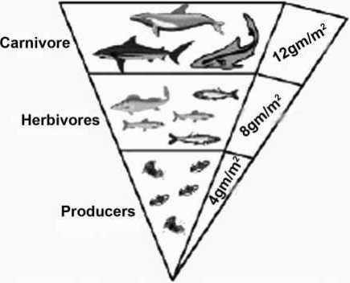
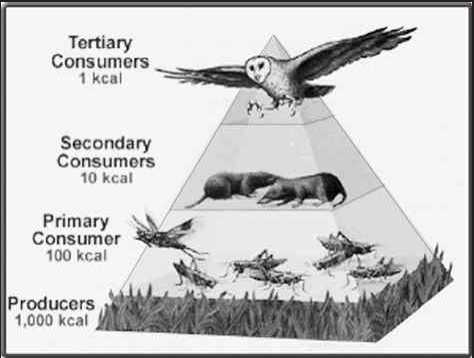
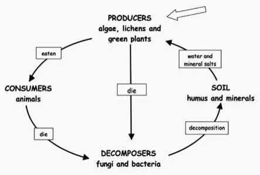
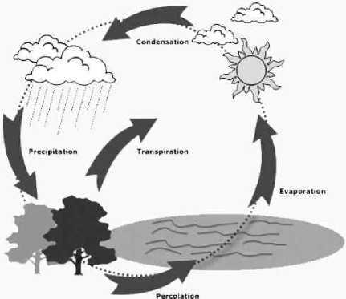
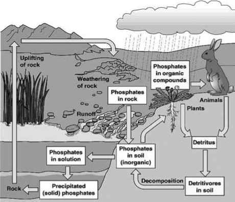
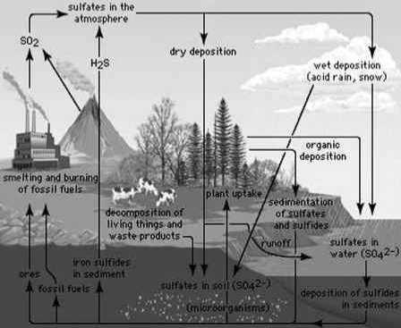
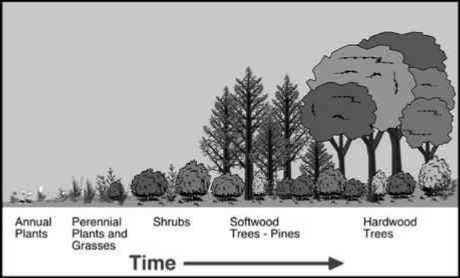

The function of an ecosystem is a broad, vast and complete dynamic system. It can be studied under the following three heads.
• Energy flow
• Nutrient cycling (biogeochemical cycles)
• Ecological succession or ecosystem development
Energy is the basic force responsible for all metabolic activities. The flow of energy from producer to top consumers is called energy flow which is unidirectional.
The study of Trophic level interaction in an ecosystem gives an idea about the energy flow through the ecosystem.
Trophic level interaction deals with how the members of an ecosystem are connected based on nutritional needs.
Trophic levels (Trophe = nourishment)
|
I |
Autotrophs |
Green plants (producers) |
|
II |
Heterotrophs |
Herbivore (primary consumers) |
|
III |
Heterotrophs |
Carnivores (secondary consumers) |
|
IV |
Heterotrophs |
Carnivore (tertiary consumers) |
|
V |
Heterotrophs |
Top carnivores (Quarternary consumers) |
Energy flows through the trophic levels: from producers to subsequent trophic levels. This energy always flows from lower (producer) to higher (herbivore, carnivore etc.) trophic level. It never flows in the reverse direction that is from carnivores to herbivores to producers.
There is a loss of some energy in the form of unusable heat at each trophic level so that energy level decreases from the first trophic level upwards.
As a result there are usually four or five trophic levels and seldom more than six as beyond that very little energy is left to support any organism. Trophic levels are numbered according to the steps an organism is away from the source of food or energy, that is the producer.
The trophic level interaction involves three concepts namely:-
1. Food Chain
2. Food Web
3. Ecological Pyramids
Organisms in the ecosystem are related to each other through feeding mechanism or trophic levels, i.e. one organism becomes food for the other. A sequence of organisms that feed on one another, form a food chain. A food chain starts with producers and ends with top carnivores.
Do you know?
Bear hibernation is different than most hibernating animals. True hibernation (like we see in ground squirrels) involves a drastic drop in body temperature but the hibernating animal will awaken occasionally to eat and defecate before resuming hibernation. When a bear ‘hibernates’ it is really in a deep sleep. It’s body temperature drops but not drastically and it does not wake up. The one exception is that a mother bear will wake up to give birth in January or February. Since food is scarce in the winter bears figure that if you can’t eat you might as well sleep. Bears like the Asiatic Bear live in warmer climates where food is readily available all year long and there is no need to hibernate.
The sequence of eaten and being eaten, produces transfer of food energy and it is known as food chain. The plant converts solar energy into chemical energy by photosynthesis.
Small herbivores consume the plant matter and convert them into animal matter. These herbivores are eaten by large carnivores.
In nature, two main types of food chains have been distinguished:
i) Grazing food chain
The consumers which start the food chain, utilising the plant or plant part as their food, constitute the grazing food chain. This food chain begins from green plants at the base and the primary consumer is herbivore.
For example, In terestrial ecosystem, grass is eaten up by caterpillar, which is eaten by lizard and lizard is eaten by snake.
In Aquatic ecosystem phytoplanktons (primary producers) is eaten by zoo planktons which is eaten by fishes and fishes are eaten by pelicans.
It starts from dead organic matter of decaying animals and plant bodies consumed by the micro-organisms and then to detritus feeding organism called detrivores or decomposer and to other predators.
| Litter —► Earthworms Chicken —► Hawk |
Detritus food chain
The distinction between these two food chains is the source of energy for the first level consumers. In the grazing food chain the primary source of energy is living plant biomass while in the detritus food chain the source of energy is dead organic matter or detritus. The two food chains are linked. The initial energy source for detritus food chain is the waste materials and dead organic matter from the grazing food chain.
A food chain represents only one part of the food or energy flow through an ecosystem and implies a simple, isolated relationship, which seldom occurs in the ecosystems.
An ecosystem may consist of several interrelated food chains. More typically, the same food resource is part of more than one chain, especially when that resource is at the lower trophic levels.
“A food web illustrates, all possible transfers of energy and nutrients among the organisms in an ecosystem, whereas a food chain traces only one pathway of the food”.
If any of the intermediate food chain is removed, the succeeding links of the chain will be affected largely. The food web provides more than one alternative for food to most of the organisms in an ecosystem and therefore increases their chance of survival.
For example, grasses may serve food for rabbit or grasshopper or goat or cow. Similarly a herbivore may be food source for many carnivorous species.
Also food availability and preferences of food of the organisms may shift seasonally e.g. we eat watermelon in summer and peaches in the winter. Thus there are interconnected networks of feeding relationships that take the form of food webs.
Do you know?
Dolphins, Porpoises and whales are called cetaceans. A cetacean is a creature belonging to a group of water living mammals that have no hind limbs and a blowhole for breathing. They are not fish!
The steps of trophic levels expressed in a diagrammatic way are referred as ecological pyramids. The food producer forms the base of the pyramid and the top carnivore forms the tip. Other consumer trophic levels are in between.
The pyramid consists of a number of horizontal bars depicting specific trophic levels which are arranged sequentially from primary producer level through herbivore, carnivore onwards. The length of each bar represents the total number of individuals at each trophic level in an ecosystem.
The number, biomass and energy of organisms gradually decrease with each step from the producer level to the consumer level and the diagrammatic representation assumes a pyramid shape.
The ecological pyramids are of three categories.
1. Pyramid of numbers,
2. Pyramid of biomass, and
3. Pyramid of energy or productivity.
This deals with the relationship between the numbers of primary producers and consumers of different levels. It is a graphic representation of the total number of individuals of different species, belonging to each trophic level in an ecosystem.
Depending upon the size and biomass, the pyramid of numbers may not always be upright, and may even be completely inverted.
( a) Pyramid of numbers - upright
• In this pyramid, the number of individuals is decreased from lower level to higher trophic level.
• This type of pyramid can be seen in grassland ecosystem.
• The grasses occupy the lowest trophic level (base) because of their abundance.
• The next higher trophic level is primary consumer -herbivore (example - grasshopper).
• The individual number of grasshopper is less than that of grass. The next energy level is primary carnivore (example - rat).
• The number of rats are less than grasshopper, because, they feed on grasshopper. The next higher trophic level is secondary carnivore (example - snakes). They feed on rats.
• The next higher trophic level is the top carnivore. (Ex. Hawk).
• With each higher trophic level, the number of individual decreases.
(b) Pyramid of numbers - inverted
• In this pyramid, the number of individuals is increased from lower level to higher trophic level.
• A count in a forest would have a small number of large producers, for e.g. few number of big trees.
• This is because the tree (primary producer) being few in number and would represent the base of the pyramid and the dependent herbivores (Example - Birds) in the next higher trophic level and it is followed by parasites in the next trophic level. Hyper parasites being at higher trophic level represents higher in number.
• And the resulting pyramid is in inverted shape. A pyramid of numbers does not take into account the fact that the size of organisms being counted in each trophic level can vary.
• It is very difficult to count all the organisms, in a pyramid of numbers and so the pyramid of number does not completely define the trophic structure for an ecosystem.
In order to overcome the shortcomings of pyramid of numbers, the pyramid of biomass is used. In this approach individuals in each trophic level are weighed instead of being counted. This gives us a pyramid of biomass, i.e., the total dry weight of all organisms at each trophic level at a particular time.
Pyramid of biomass is usually determined by collecting all organisms occupying each trophic level separately and measuring their dry weight. This overcomes the size difference problem because all kinds of organisms at a trophic level are weighed. Biomass is measured in g/m2.
(a) Upward pyramid
Upright Pyramid of Biomass
For most ecosystems on land, the pyramid of biomass has a large base of primary producers with a smaller trophic level perched on top.
The biomass of producers (autotrophs) is at the maximum. The biomass of next trophic level i.e primary consumers is less than the producers. The biomass of next higher trophic level i.e secondary consumers is less than the primary consumers. The top, high trophic level has very less amount of biomass.
(b) Inverted pyramid
In contrast, in many aquatic ecosystems, the pyramid of biomass may assume an inverted form.
Inverted Pyramid in an Aquatic Ecosystem
This is because the producers are tiny phytoplanktons that grow and reproduce rapidly. Here, the pyramid of biomass has a small base, with the consumer biomass at any instant actually exceeding the producer biomass and the pyramid assumes inverted shape.
To compare the functional roles of the trophic levels in an ecosystem, an energy pyramid is most suitable. An energy pyramid, reflects the laws of thermodynamics, with conversion of solar energy to chemical energy and heat energy at each trophic level and with loss of energy being depicted at each transfer to another trophic level. Hence the pyramid is always upward, with a large energy base at the bottom.
Let us explain this with an example. Suppose an ecosystem receives 1000 calories of light energy in a given day. Most of the energy is not absorbed; some is reflected back to space; of the energy absorbed only a small portion is
Do you know?
All snakes smell with their tongues. When a snake sticks out its tongue it smells its surroundings. The moist tongue collects scents and small organisms from whatever it touches and from the air around it. When the tongue goes back into the mouth the forks touch a special sensory spot called the Jacobson’s organ on the roof of the mouth and tells the snake what it smells. Snakes have a small notch in their lips that they can stick their tongues through so they don’t need to open their mouths. Some snakes can smell with their noses.
utilised by green plants, out of which the plant uses up some for respiration and of the 1000 calories, therefore only 100 calories are stored as energy rich materials.
Pyramid of energy
Now suppose an animal, say a deer, eats the plant containing 100 cal of food energy. The deer uses some of it for its own metabolism and stores only 10 cal as food energy. A lion that eats the deer gets an even smaller amount of energy. Thus usable energy decreases from sunlight to producer to herbivore to carnivore. Therefore, the energy pyramid will always be upright.
Energy pyramid concept helps to explain the phenomenon of biological magnification-the tendency for toxic substances to increase in concentration progressively at higher levels of the food chain.
Pollutants especially nondegradable ones move through the various trophic levels in an ecosystem.
Nondegradable pollutants mean materials, which cannot be metabolized by the living organisms.
Example: chlorinated hydrocarbons.
We are concerned about these phenomena because, together they enable even small concentrations of chemicals in the environment to find their way into organisms in high enough dosages to cause problems.
Movement of these pollutants involves two main processes:
• It refers to how pollutants enter a food chain.
• In bioaccumulation there is an increase in concentration of a pollutant from the environment to the first organism in a food chain.
2.5.2. Biomagnification
Biomagnification
• Biomagnification refers to the tendency of pollutants to concentrate as they move from one trophic level to the next.
• Thus in biomagnification there is an increase in concentration of a pollutant from one link in a food chain to another.
In order for biomagnification to occur, the pollutant must be: long-lived, mobile, soluble in fats, biologically active.
If a pollutant is short-lived, it will be broken down before it can become dangerous. If it is not mobile, it will stay in one place and is unlikely to be taken up by organisms. If the pollutant is soluble in water, it will be excreted by the organism. Pollutants that dissolve in fats, however, may be retained for a long time.
It is traditional to measure the amount of pollutants in fatty tissues of organisms such as fish. In mammals, we often test the milk produced by females, since the milk has a lot of fat in it are often more susceptible to damage from toxins (poisons). If a pollutant is not active biologically, it may biomagnify, but we really don’t worry about it much, since it probably won’t cause any problems Examples: DDT.
• Organisms living in this earth are interlinked to each other in one way or other. The interaction between the organisms is fundamental for its survival and functioning of ecosystem as a whole.
|
Biotic Interaction | |||
|
S.No. |
Type |
Spices 1 |
Species 2 |
|
1. |
Mutualism |
(+) |
(+) |
|
2. |
Commensalism |
(+) |
(0) |
|
3. |
Amensalism |
(-) |
(0) |
|
4. |
Competition |
(-) |
(-) |
|
5. |
Predation |
(+) |
(-) |
|
6. |
Parasitism |
(+) |
(-) |
|
(+) Benefited (-) Harmed | |||
|
(0) Neither Benefited nor harmed. | |||
• Mutualism: both species benefit.
Example: in pollination mutualisms, the pollinator gets food (pollen, nectar), and the plant has its pollen transferred to other flowers for cross-fertilization (reproduction).
• Commensalism: one species benefits, the other is unaffected.
Example: cow dung provides food and shelter to dung beetles. The beetles have no effect on the cows.
• Competition: both species are harmed by the interaction.
Example: if two species eat the same food, and there isn’t enough for both, both may have access to less food than they would if alone. They both suffer a shortage of food
• Predation and parasitism: one species benefits, the other is harmed.
Example: predation—one fish kills and eats parasitism: tick gains benefit by sucking blood; host is harmed by losing blood.
• Amensalism: One species is harmed, the other is unaffected.
Example: A large tree shades a small plant, retarding the growth of the small plant. The small plant has no effect on the large tree.
• Neutralism: There is no net benefit or harm to either species. Perhaps in some interspecific interactions, the costs and benefits experienced by each partner are exactly the same so that they sum to zero. It is not clear how often this happens in nature. Neutralism is also sometimes described as the relationship between two species inhabiting the same space and using the same resources, but that have no effect on each other. In this case, one could argue that they aren’t interacting at all.
The living world depends upon the energy flow and the nutrients circulation that occurs through ecosystem. Both influence the abundance of organisms, the metabolic rate at which they live, and the complexity of the ecosystem.
Energy flows through ecosystems enabling the organisms to perform various kinds of work and this energy is ultimately lost as heat forever in terms of the usefulness of the system. On the other hand, nutrients of food matter never get used up. They can be recycled again and again indefinitely.
For e.g. when we breathe we may be inhaling several million atoms of elements that may have been inhaled by our ancestors or other organisms.
Carbon, hydrogen, oxygen, nitrogen and phosphorus as elements and compounds make up 97% of the mass of our bodies and are more than 95% of the mass of all living organisms. In addition to these about 15 to 25 other elements are needed in some form for the survival and good health of plants and animals.
These elements or mineral nutrients are always in circulation moving from non-living to living and then back to the non-living components of the ecosystem in a more or less circular fashion. This circular fashion is known as biogeochemical cycling (bio for living; geo for atmosphere).
The nutrient cycle is a concept that describes how nutrients move from the physical environment to the living organisms, and subsequently recycled back to the physical environment.
This movement of nutrients from the environment into plants and animals and again back to the environment is essential for life and it is the vital function of the ecology of any region. In any particular environment, to maintain its organism in a sustained manner, the nutrient cycle must be kept balanced and stable.
Nutrient cycling is typically studied in terms of specific nutrients, with each nutrient in an environment having its own particular pattern of cycling. Among the most important nutrient cycles are the carbon nutrient cycle and the nitrogen nutrient cycle. Both of these cycles make up an essential part of the overall soil nutrient cycle. There are many other nutrient cycles that are important in ecology, including a large number of trace mineral nutrient cycles.
Nutrient cycling
• Based on the replacement period a nutrient cycle is referred to as Perfect or Imperfect cycle.
• A perfect nutrient cycle is one in which nutrients are replaced as fast as they are utilised. Most gaseous cycles are generally considered as perfect cycles.
• In contrast sedimentary cycles are considered relatively imperfect, as some nutrients are lost from the cycle and get locked into sediments and so become unavailable for immediate cycling.
• Based on the nature of the reservoir, there are two types of cycles namely Gaseous and sedimentary cycle
• Gaseous Cycle - where the reservoir is the atmosphere or the hydrosphere, and
• Sedimentary Cycle - where the reservoir is the earth’s crust.
Spiders can’t chew or swallow inject their prey with poison using their fangs. The poison turns the insides of insect to a watery goop and the spider just sucks it up.
Let us first study some of the most important gaseous cycles; namely - water, carbon and nitrogen.
(a) Water Cycle (Hydrologic)
Water as an important ecological factor determines the structure and function of the ecosystem. Cycling of all other nutrients is also dependent upon water as it provides their transportation during the various steps. It acts as a solvent medium for their uptake of nutrients by organisms.
The hydrologic cycle is the continuous circulation of water in the Earth-atmosphere system which is driven by solar energy. Water on our planet is stored in major reservoirs like atmosphere, oceans, lakes, rivers, soils, glaciers, snowfields, and groundwater. Water moves from one reservoir to another by the processes of evaporation, transpiration, condensation, precipitation, deposition, runoff, infiltration, and groundwater flow.
Water Cycle
Carbon is a minor constituent of the atmosphere as compared to oxygen and nitrogen. However, without carbon dioxide life could not exist, because it is vital for the production of carbohydrates through photosynthesis by plants. It is the element that anchors all organic substances from coal and oil to DNA (deoxyribonucleic acid: the compound that carries genetic information).
Carbon is present in the atmosphere, mainly in the form of carbon dioxide (CO2). Carbon cycle involves a continuous exchange of carbon between the atmosphere and organisms. Carbon from the atmosphere moves to green plants by the process of photosynthesis, and then to animals. By process of respiration and decomposition of dead organic matter it returns back to atmosphere. It is usually a short term cycle.
Some carbon also enters a long term cycle. It accumulates as un-decomposed organic matter in the peaty layers of marshy soil or as insoluble carbonates in bottom sediments of aquatic systems which take a long time to be released.
In deep oceans such carbon can remained buried for millions of years till geological movement may lift these rocks above sea level. These rocks may be exposed to erosion, releasing their carbon dioxide, carbonates and bicarbonates into streams and rivers.
Fossil fuels such as coals, oil and natural gas etc. are organic compounds that were buried before they could be decomposed and were subsequently transformed by time and geological processes into fossil fuels. When they are burned the carbon stored in them is released back into the atmosphere as carbon-dioxide.
(c) The Nitrogen Cycle
Nitrogen is an essential constituent of protein and is a basic building block of all living tissue. It constitutes nearly 16% by weight of all the proteins.
Carbon Cycle
Nitrogen Cycle
There is an inexhaustible supply of nitrogen in the atmosphere but the elemental form cannot be used directly by most of the living organisms. Nitrogen needs to be ‘fixed’,
that is, converted to ammonia, nitrites or nitrates, before it can be taken up by plants.
Nitrogen fixation on earth is accomplished in three different ways:
(i) By microorganisms (bacteria and blue-green algae)
(ii) By man using industrial processes (fertilizer factories) and
(iii) To a limited extent by atmospheric phenomenon such as thunder and lighting
The amount of Nitrogen fixed by man through industrial process has far exceeded the amount fixed by the Natural Cycle. As a result Nitrogen has become a pollutant which can disrupt the balance of nitrogen. It may lead to Acid rain, Eutrophication and Harmful Algal Blooms.
Certain microorganisms are capable of fixing atmospheric nitrogen into ammonium ions. These include free living nitrifying bacteria (e.g. aerobic Azotobacter and anaerobic Clostridium) and symbiotic nitrifying bacteria living in association with leguminous plants and symbiotic bacteria living in non leguminous root nodule plants (e.g. Rhizobium) as well as blue green algae (e.g. Anabaena, Spirulina).
Ammonium ions can be directly taken up as a source of nitrogen by some plants, or are oxidized to nitrites or nitrates by two groups of specialised bacteria: Nitrosomonas bacteria promote transformation of ammonia into nitrite. Nitrite is then further transformed into nitrate by the bacteria Nitrobacter.
The nitrates synthesised by bacteria in the soil are taken up by plants and converted into amino acids, which are the building blocks of proteins. These then go through higher trophic levels of the ecosystem. During excretion and upon the death of all organisms nitrogen is returned to the soil in the form of ammonia.
Certain quantity of soil nitrates, being highly soluble in water, is lost to the system by being transported away by surface run-off or ground water. In the soil as well as oceans there are special denitrifying bacteria (e.g. Pseudomonas), which convert the nitrates/nitrites to elemental nitrogen. This nitrogen escapes into the atmosphere, thus completing the cycle.
The periodic thunderstorms convert the gaseous nitrogen in the atmosphere to ammonia and nitrates which eventually reach the earth’s surface through precipitation and then into the soil to be utilized by plants.
Do you know?
Pythons are constrictors, which mean that they will ‘squeeze’ the life out of their prey. They coil themselves around their prey and with each breathe the creature takes the snake will squeeze a little tighter until they stop breathing completely. Once the heart stops the prey is swallowed whole. The entire animal is digested in the snake’s stomach except for fur or feathers.
Phosphorus, calcium and magnesium circulate by means of the sedimentary cycle. The element involved in the sedimentary cycle normally does not cycle through the atmosphere but follows a basic pattern of flow through erosion, sedimentation, mountain building, volcanic activity and biological transport through the excreta of marine birds.
(a) Phosphorus Cycle
Phosphorus plays a central role in aquatic ecosystems and water quality. Unlike carbon and nitrogen, which come primarily from the atmosphere, phosphorus occurs in large amounts as a mineral in phosphate rocks and enters the cycle from erosion and mining activities. This is the nutrient considered to be the main cause of excessive growth of rooted and free-floating microscopic plants in lakes.
Phosphorous cycle
The main storage for phosphorus is in the earth’s crust. On land phosphorus is usually found in the form of phosphates. By the process of weathering and erosion phosphates enter rivers and streams that transport them to the ocean.
In the ocean once the phosphorus accumulates on continental shelves in the form of insoluble deposits. After millions of years, the crustal plates rise from the sea floor and expose the phosphates on land. After more time, weathering will release them from rock and the cycle’s geochemical phase begins again.
(b) Sulphur Cycle
The sulphur reservoir is in the soil and sediments where it is locked in organic (coal, oil and peat) and inorganic deposits (pyrite rock and sulphur rock) in the form of sulphates, sulphides and organic sulphur.
It is released by weathering of rocks, erosional runoff and decomposition of organic matter and is carried to terrestrial and aquatic ecosystems in salt solution.
The sulphur cycle is mostly sedimentary except two of its compounds hydrogen sulphide (H2S) and sulphur dioxide (SO2) add a gaseous component to its normal sedimentary cycle.
Sulphur enters the atmosphere from several sources like volcanic eruptions, combustion of fossil fuels, from surface of ocean and from gases released by decomposition. Atmospheric hydrogen sulphide also gets oxidised into sulphur dioxide. Atmospheric sulphur dioxide is carried back to the earth after being dissolved in rainwater as weak sulphuric acid.
Sulphur Cycle
Whatever the source, sulphur in the form of sulphates is take up by plants and incorporated through a series of metabolic processes into sulphur bearing amino acid which is incorporated in the proteins of autotroph tissues. It then passes through the grazing food chain.
Sulphur bound in living organism is carried back to the soil, to the bottom of ponds and lakes and seas through excretion and decomposition of dead organic material.
The Bio-geochemical cycles discussed here are only a few of the many cycles present in the ecosystem. These cycles usually do not operate independently but interact with each other at some point or the other.
Do you know?
Fur-picking’, the universal habit among the apes and monkeys is not a hunt for lice or fleas. They are naturally remarkably free from these vermin. On the contrary it is a means of social communication between members of the troop (a group of monkeys) and to develop strong social bond.
Succession is a universal process of directional change in vegetation, on an ecological time scale.
Succession occurs when a series of communities replace one another due to large scale destruction either natural or manmade. This process continues - one community replacing another community, until a stable, mature community develops.
Succession is a progressive series of changes which leads to the establishment of a relatively stable climax community.
Ecological Succession
The first plant to colonise an area is called the pioneer community. The final stage of succession is called the climax community. The stage leading to the climax community are called successional stages or seres.
Succession is characterised by the following: increased productivity, the shift of nutrients from’ the reservoirs, increased diversity of organisms with increased niche development, and a gradual increase in the complexity of food webs.
In primary succession on a terrestrial site the new site is first colonized by a few hardy pioneer species that are often microbes, lichens and mosses. The pioneers over a few generations alter the habitat conditions by their growth and development.
These new conditions may be conducive to the establishment of additional organisms that may subsequently arrive at the site. The pioneers through their death any decay leave patches of organic matter in which small animals can live.
The organic matter produced by these pioneer species produce organic acids during decomposition that dissolve and etch the substratum releasing nutrients to the substratum. Organic debris accumulates in pockets and crevices, providing soil in which seeds can become lodged and grow.
As the community of organisms continues to develop, it becomes more diverse and competition increases, but at the same time new niche opportunities develops.
The pioneer species disappear as the habitat conditions change and invasion of new species progresses, leading to the replacement of the preceding community.
Secondary succession occurs when plants recognize an area in which the climax community has been disturbed. Secondary succession is the sequential development of biotic communities after the complete or partial destruction of the existing community. A mature or intermediate community may be destroyed by natural events such as floods, droughts, fires, or storms or by human interventions such as deforestation, agriculture, overgrazing, etc
This abandoned farmland is first invaded by hardy species of grasses that can survive in bare, sun-baked soil. These grasses may be soon joined by tall grasses and herbaceous plants. These dominate the ecosystem for some years along with mice, rabbits, insects and seed-eating birds.
Eventually, some trees come up in this area, seeds of which may be brought by wind or animals. And over the years, a forest community develops. Thus an abandoned farmland over a period becomes dominated by trees and is transformed into a forest
The differences between primary and secondary succession, the secondary succession starts on a well developed soil already formed at the site. Thus secondary succession is relatively faster as compared to primary succession which may often require hundreds of years.
When succession is brought about by living inhabitants of that community itself, the process is called autogenic succession, while change brought about by outside forces is known as allogenic succession.
Succession in which, initially the green plants are much greater is quantity is known as autotrophic succession; and the ones in which the heterotrophs are greater in quantity is known as heterotrophic succession.
Succession would occur faster in area existing in the middle of the large continent. This is because, here all propagules or seeds of plants belonging to the different seres would reach much faster, establish and ultimately result in climax community.